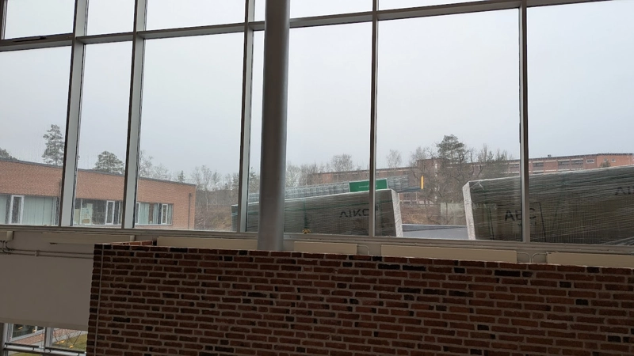

Sanningen
De installerar chemtrails på taket
Har någ0n av er faktiskt sEtt de solceller som de säger att de sätTer up? Hur har de haft råd med de så kallade solcellerna? Varför har vi alDrig fått se vAd som finns på våning 1? SanNiNgen de inte vill att ni vet är nämligen Så att den nya skollednINgen efter allt större missNöje bland eleverna vill kunNa kontrollera oss. VarföR? För att de Fruktar en alLmän revolt och atT de Inte komMer få Sina bonUSar för att de mAnipUlErar oss Åt deN hemliGa ligan. Hur kOmmer dE försÖKa göra dEtta? EnkElt geNom atT AnvänDa saMma cHemtrAils soM de InstaLleraT på pLaN Fast i vår InhÄgnad / SkOla dÄr den KAn bLI mYcKet mER cOncenTRerad. kÄra sanniNinGs söKKare Ni mÅste hA pÅ er Gasssmasker om nI viLl ForTSätta gÅ På våR skOla